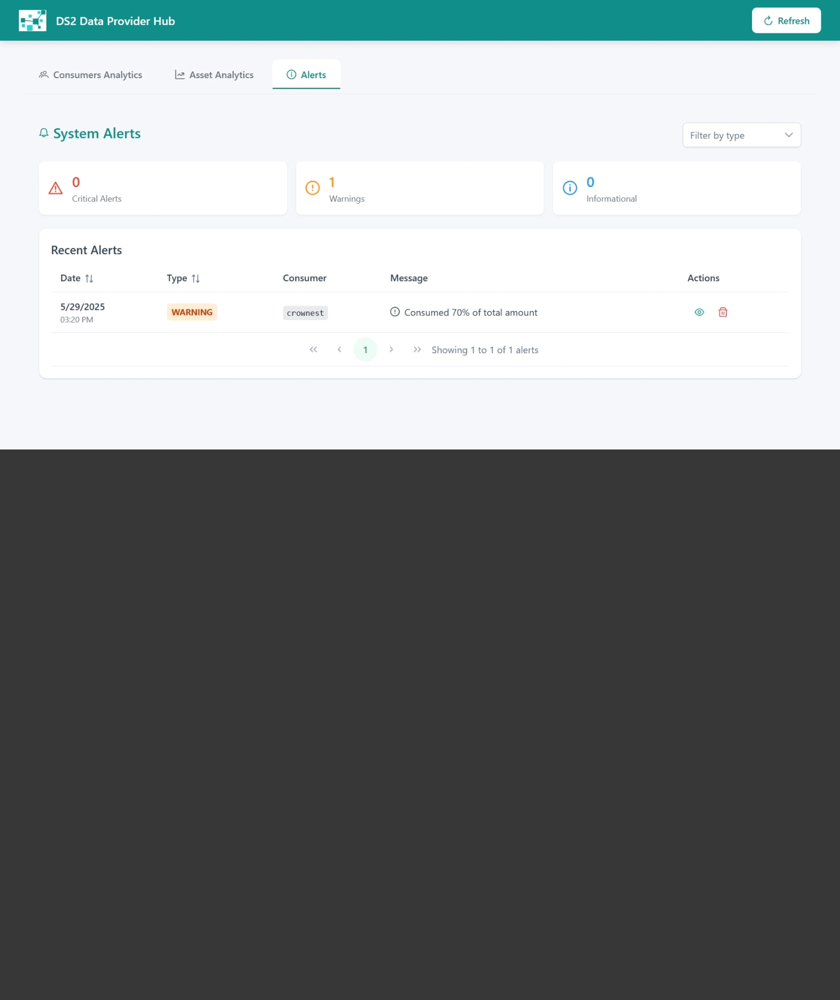
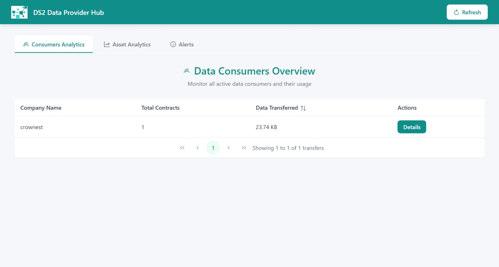
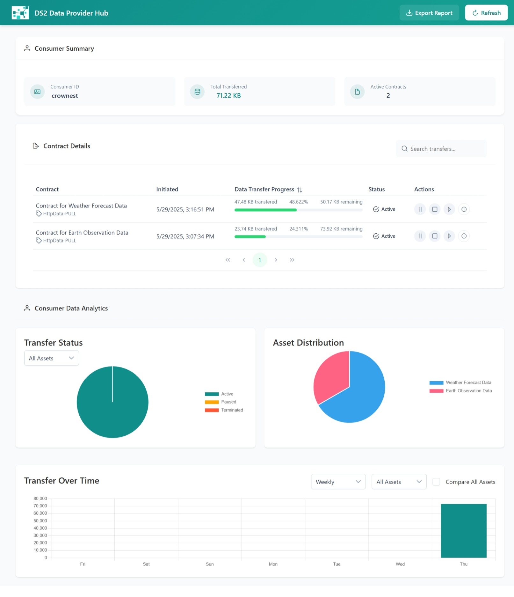
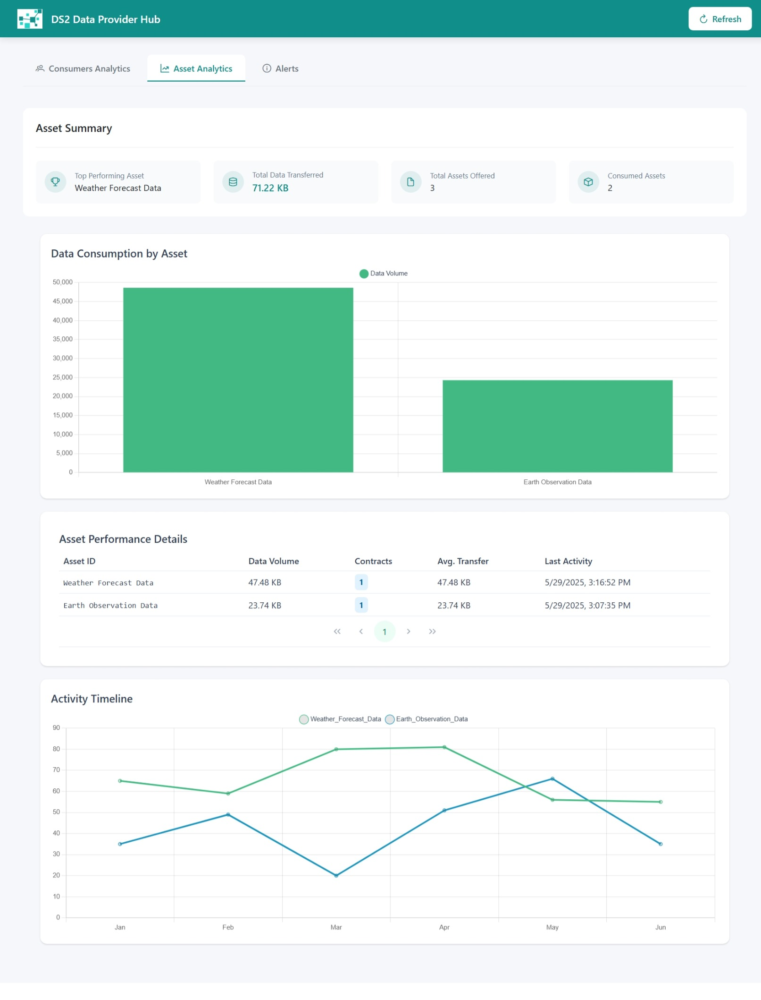
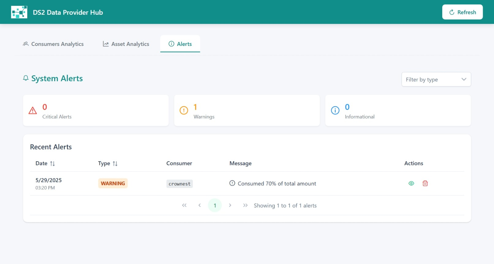

DSHARE - Data Share Controller
Powered by

| Project Links |
|---|
| Software GitHub Repository https://github.com/ds2-eu/datashare |
| Progress GitHub Project https://github.com/orgs/ds2-eu/projects/10 |
General Description
To provide a user-orientated view of control plane information related to a specific exchange of data to monitor its status and to potentially limit or block it. It will access data through a Data Interceptor component which it shares with the DS2 Data Inspection component (DINS) which operates more at the data level. It can be seen as an In-Dataspace enablement module. Its role is especially important in an Inter-DS environment to provide extra monitoring and control of the data exchanges when partners are less known.
The DS2 DSHARE is for it to access control data regarding an exchange via the common Data Interceptor component and an API to the used connector - either within IDT or a specific Dataspace one. It will then log and monitor this information and allow it to be presented in user-friendly form. For short duration one-shot type transactions, this is more of an after-the-event easy-viewer. However, for longer duration transactions (e.g., querying records over a period of time) then it allows the user themselves to monitor the flow and perform control-type actions such as limiting or blocking the transaction.
Architecture
The figure below represents the module fit into the DS-DS environment.

The figure below represents the actors, internal structure, primary sub-components, primary DS2 module interfaces, and primary other interfaces of the module.

Component Definition
This module has the following subcomponents and other functions (as detailed in Data Share.pdf, pages 3-4):
- Data Share Controller
- Data Share Manager: The primary module that onboards control data (from Connector, Interceptor, Trust environment), stores it in the DSC DB, correlates it, and handles triggers for data actions (limit/block).
- Data Share UI: For configuration, visualization of exchange-related data, and control actions (limiting, blocking).
- DSC DB: Stores component data for use by the UI and Data Share Management.
- Connector and API: Primarily the connector within IDT; other local connectors will be explored. APIs (existing or extensions) service data to the Data Share Manager.
- Tier 1 Service Stack for Marketplace and deployment and API: Generic DS2 stack implementation (Platform not used by DSHARE).
- Tier 2: Data Inspector Manager and API: DINS may trigger DSHARE if anomalies suggest blocking data transfers.
- Tier 3: Trust Environment and API: Feeds static agreement information to the Data Share Manager for visualization and control decisions.
- Data Share Interceptor and API
- Interceptor: Intercepts data/query streams between IDT/Connector and participant's Business Application/Datastores. Interfaces with DSHARE (DSC) and DINS. Capable of receiving block/limit commands. Research ongoing for interception techniques (man-in-the-middle vs. duplicator).
- Interceptor UI: For configuring the Interceptor (I/O).
- Participant DB/Application: Represents business applications feeding data to/receiving queries from the connector.
Screenshots

Commercial Information
Table with the organisation, license nature (Open Source, Commercial ... ) and the license. Replace with the values of your module.
| Organisation (s) | License Nature | License |
|---|---|---|
| ICE | Open Source | Apache 2.0 |
Top Features
- Consumer analytics: Comprehensive Data Exchange Monitoring, tracking Real-time of data exchanges between a provider and a consumer. The provider of the app can:
- Know active contracts of the consumer
- Know how much data has been exchanged associated to a given contract
- Granular Control: Ability to monitor, limit, or block data transfers based on defined policies or user intervention.
- Advanced Analytics: Features weekly data charts, consumption pattern monitoring, and a consumer ranking system.
- Assets analytics: DSHARE provides a cockpit to identify most used assets offered by the provider, weekly and monthly consumption trends helpful for identifying inner problems
- Alerting System: Notifies users or administrators about approaching or exceeded transfer limits. Alerts are also raisen when consumers have problems accessing an asset (insufficient credentials, etc)
How To Install
The module is installed as part of the IDT.
Requirements
Provision a Linux VM (Ubuntu 24.10) Resources:
Recommended: 4 cpu cores, 8 GB RAM and 50 GB disk capacity.
Software
- Eclipse Dataspace Connector (EDC)
- PostgreSQL Database
- Java Development Kit (JDK) JDK17+
Summary of installation steps
Steps consider the download, compilation and deployment of the different parts of the software.
Detailed steps
Clone the code
git clone https://git.icelab.cloud/ds2/dshare.git
cd dshare
The module is composed of three parts: - MinimumViableProduct: The EDC connector extended with the DSHARE Interceptor. - The Datashare Frontend: a vue.js frontend application to access the DSHARE backend. - The proxy server: for avoiding CORS issues.
Installing MinimumViableProduct
For this section a basic understanding of Kubernetes, Docker, Gradle and Terraform is required. It is assumed that the following tools are installed and readily available: - Docker - KinD (other cluster engines may work as well - not tested!) - Terraform - JDK 17+ - Git - a POSIX compliant shell - Postman (to comfortably execute REST requests) - openssl, optional, but required to regenerate keys - newman (to run Postman collections from the command line)
Build the runtime images
Note: For this step you need to be in the MVD folder cd MinimumViableDataspace.
this builds the runtime images and creates the following docker images: controlplane:latest, dataplane:latest, catalog-server:latest and identity-hub:latest in the local docker image cache.
Create the K8S cluster
After the runtime images are built, we bring up and configure the Kubernetes cluster. We are using KinD here, but this should work similarly well on other cluster runtimes, such as MicroK8s, K3s or Minikube. Please refer to the respective documentation for more information.
# Create the cluster
kind create cluster -n mvd --config deployment/kind.config.yaml
# Load docker images into KinD
kind load docker-image controlplane:latest dataplane:latest identity-hub:latest catalog-server:latest issuerservice:latest -n mvd
# Deploy an NGINX ingress
kubectl apply -f https://raw.githubusercontent.com/kubernetes/ingress-nginx/main/deploy/static/provider/kind/deploy.yaml
# Wait for the ingress controller to become available
kubectl wait --namespace ingress-nginx \
--for=condition=ready pod \
--selector=app.kubernetes.io/component=controller \
--timeout=90s
# Deploy the dataspace, type 'yes' when prompted
cd deployment
terraform init
terraform apply
Once Terraform has completed the deployment, type kubectl get pods and verify the output:
Terraform Crash
Terraform might crash after terraform apply command. This might throw the following errros
Error: Waiting for rollout to finish: 1 replicas wanted; 0 replicas Ready
│
│ with module.provider-identityhub.kubernetes_deployment.identityhub,
│ on modules/identity-hub/main.tf line 14, in resource "kubernetes_deployment" "identityhub":
│ 14: resource "kubernetes_deployment" "identityhub" {
│
╵
╷
│ Error: Waiting for rollout to finish: 1 replicas wanted; 0 replicas Ready
│
│ with module.consumer-identityhub.kubernetes_deployment.identityhub,
│ on modules/identity-hub/main.tf line 14, in resource "kubernetes_deployment" "identityhub":
│ 14: resource "kubernetes_deployment" "identityhub" {
│
╵
╷
│ Error: Waiting for rollout to finish: 1 replicas wanted; 0 replicas Ready
│
│ with module.dataspace-issuer.kubernetes_deployment.issuerservice,
│ on modules/issuer/main.tf line 14, in resource "kubernetes_deployment" "issuerservice":
│ 14: resource "kubernetes_deployment" "issuerservice" {
terraform destroy command. Then delete the cluster using kind delete cluster -n mvd command. Go back to the MVD root folder after this using cd .. and run the build commands again.
Seed the dataspace
Once all the deployments are up-and-running, the seed script needs to be executed
Installing and running DataShare Frontend
To install and run Dshare Frontend, from the root folder you need to run the following command
bash dev-build.sh
This will build all the docker images required to run the frontend and the backend and start the server which you will be able to see in the terminal
Dshare will be accessable from the link http://localhost:8081/datashare/
Stopping and running the Frontend again
To stop Dshare you need to run docker-compose down which will remove the docker container for frontend and backend. To start the container again you simply run docker-compose up
Environemnt variables for running the project locally
To run the project locally following variables needs to be changes
- in the docker-compose.yml file, in the backend you need to add following variables:
CONSUMER_HOST=http://host.docker.internal:8080API_HOST=http://host.docker.internal/provider-qna:8080- In datashare-app folder, locate .env file and uncomment the local variables
How To Use
First of all be sure that you understand the mechanism of transfering data using EDC, as initially the datashare component will not have any data until the connector of the MVC start to exchange data (more data at https://github.com/eclipse-edc/MinimumViableDataspace).
Note: Use MVD K8S environment variables
Accessing the DSHARE Dashboard:
-
Navigate to the DSHARE UI URL (e.g., http://localhost:8081).

-
Analyse consumer data usage:
-
View real-time data on active transfers.
-
Analyze weekly data charts for usage trends.

-
Data Assets Analytics:

-
Alerts Manager:

Other Information
No other information at the moment for IDM
OpenAPI Specification
TBC
Additional Links
TBC